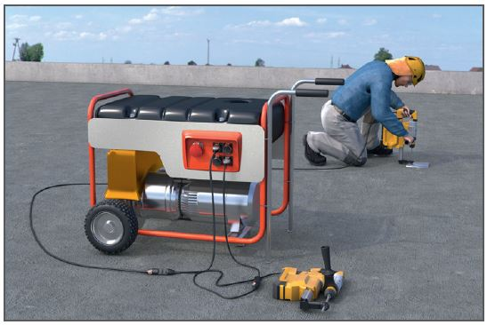
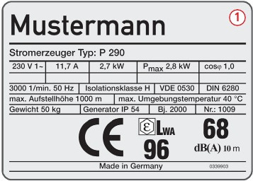
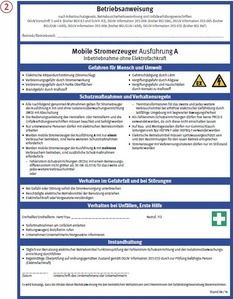
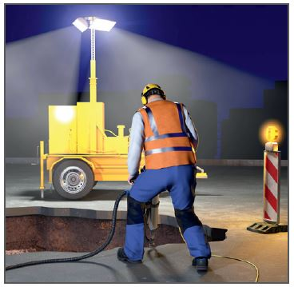

Gefährdungen
- Es besteht die Gefahr einen
elektrischen Schlag zu erleiden.
- Bei Verwendung von Geräten
mit Verbrennungsmotoren bestehen
Gefährdungen durch
Gefahrstoffe, Brand und Lärm.


Schutzmaßnahmen
Bereitstellung
- Stromerzeuger standsicher
aufstellen.
- Entsprechend dem Leistungsbedarf
ausreichend bemessene
Geräte auswählen und bereitstellen
 .
.
- Nur regelmäßig (z.B. halbjährlich)
geprüfte Geräte einsetzen.
Betrieb
- Betriebsanweisung mit Schutzmaßnahmen
erstellen und am
Einsatzort mitführen
 .
.
- Beschäftigte anhand der
Betriebsanweisung unterweisen.
- Bei der ungeschützten Verwendung
im Freien nur Geräte mind.
der Schutzart IP 54 einsetzen.
- Nur Gummischlauchleitungen
vom Typ H 07RN-F (oder gleichwertige
Bauarten) einsetzen.
- Behebung von Störungen,
Instandsetzungen und Prüfungen
an den elektrischen Teilen dürfen
nur durch eine Elektrofachkraft
durchgeführt werden.
- Die Art der Ausführung des
Stromerzeugers (A,B,C oder D)
ist anhand der Herstellerangaben
oder durch eine Elektrofachkraft
zu ermitteln. Das Gerät ist entsprechend
zu kennzeichnen.
- Stromerzeuger der Ausführung
C und D müssen von Elektrofachkräften geerdet und für den
Betrieb freigeben werden. Die
Elektrofachkraft legt die notwendigen
Schutzmaßnahmen und
die Betriebsbedingungen fest.
- Stromerzeuger der Ausführung
A und B müssen nicht geerdet
werden und dürfen ohne Freigabe durch eine Elektrofachkraft
eingesetzt werden.
- Beim Einsatz von Stromerzeugern
der Bauart A darf ein Betriebsmittel
direkt an den Stromerzeuger angeschlossen werden.
Alle weiteren Betriebsmittel
müssen über zusätzliche Schutzeinrichtungen
(PRCD, Trenntransformator) betrieben werden.
- RCD für Kraftstromsteckdosen
müssen vom Typ B sein.
- PRCD-S können nicht eingesetzt
werden.
- Beim Einsatz elektrischer
Betriebsmittel unter erhöhter
elektrischer Gefährdung (z.B.
bei begrenzter Bewegungsfreiheit
in leitfähiger Umgebung wie
in Leitungsgräben, Kesseln,
begehbaren Bewehrungskörben)
darf nur ein Verbraucher angeschlossen
werden. Für jeden
weiteren Verbraucher wird ein
separater Trenntrafo erforderlich.
(RCD reicht nicht).

Zusätzliche Hinweise für
Geräte mit Verbrennungsmotor
- Geräte im Inneren von Gebäuden nur in separaten
Räumen mit ausreichender
Belüftung aufstellen.
- Ableitung der Abgase durch
Rohre oder Schläuche.
- Bei Kurbelstarteinrichtungen
geeignete Rückschlagsicherungen oder Sicherheitskurbeln
verwenden.
- Bei Seilstart Seilfangeinrichtungen
verwenden, die das
Starten gegen die Drehrichtung
des Motors verhindern.
07/2021